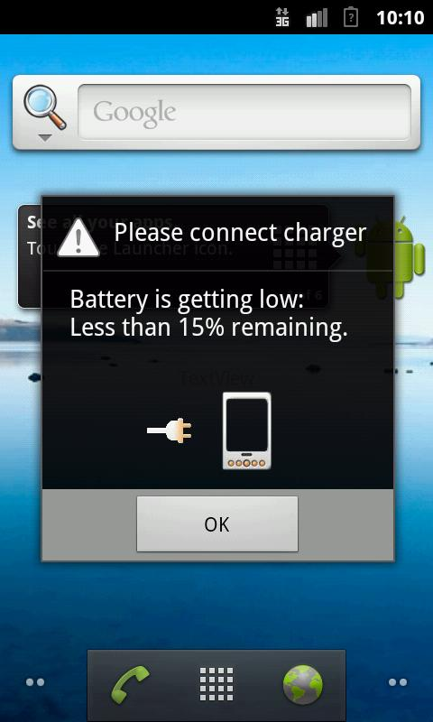
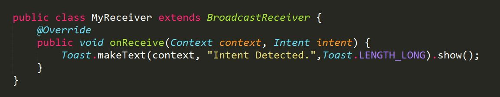
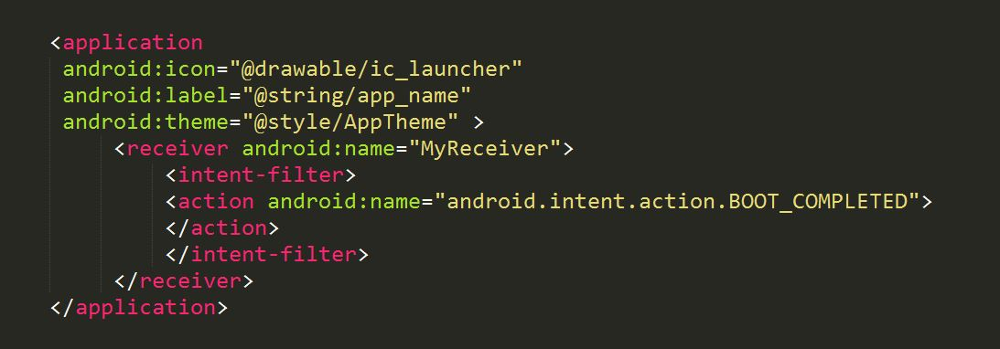
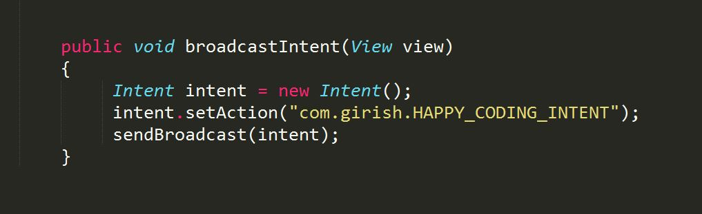

ANDROID DEVELOPMENT
Broadcast Receivers
Raise volume above safe level? Listening at high volume for long periods may damage your hearing.
Heard this somewhere?
What happens in an android device when the battery gets low, say below 15% ?

How do you think both these things work?
These, and a lot more in Android, work using what are known as Broadcast Receivers.
Unicast vs Multicast vs Broadcast
So, in a normal Android phone, there are a lot of Broadcast messages sent every now and then.
Let's assume you have to develop an app that continuously uses the Internet connection to download some data. Is it advisable to let the app run even after the batter gets below, say, 10% ?
NO
So, in our app, we need to have something like this-

How do we do this? We know whenever battery gets low, a Broadcast message is sent throughout the system and all the apps can access this message. So, what we can do is, create a class in our app that 'receives this broadcast message' and then turns off the Internet usage.
The Formal Definition
Broadcast Receivers simply respond to broadcast messages from other applications or from the system
itself. These messages are sometime called events or intents. For example, applications can also initiate
broadcasts to let other applications know that some data has been downloaded to the device and is available for
them to use, so this is broadcast receiver who will intercept this communication and will initiate appropriate action.
There are 2 steps in making use of intent broadcasts. They are:
- Creating the Broadcast Receiver
- Registering the Broadcast Receiver with the Android Manifest a.k.a The Dad.
Step 1 - Creating the Receiver
A broadcast receiver is implemented as a subclass of BroadcastReceiver class and overriding the onReceive()
method where each message is received as a Intent object parameter.

Step 2 - Registering the Receiver
To make our receiver class 'MyReceiver' receive only that particular broadcast that we want, we need to register the class with the Android Manifest by specifying the Broadcast Intent's name.

Similar to BOOT_COMPLETED, there are many other system events stored as static variables in the class Intent. Some of them are:
android.intent.action.BATTERY_CHANGED
android.intent.action.BATTERY_LOW
android.intent.action.BATTERY_OKAY
android.intent.action.BUG_REPORT
android.intent.action.CALL
android.intent.action.CALL_BUTTON
android.intent.action.DATE_CHANGED
android.intent.action.REBOOT
You can even send out your own broadcast messages. That is, you can send out 'Custom Broadcast' mesages from inside your app's activity, and the other apps can receiver your Intent with their Broadcast Receivers that are registered for your custom Intent.

A broadcast receiver class works even when your app is closed. It'll listen for the registered broadcast when even when in background. So be careful when you're using Broadcast Receivers!